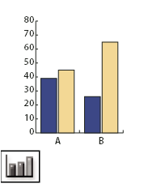
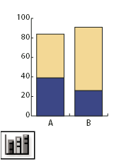
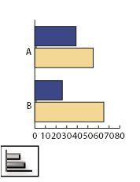
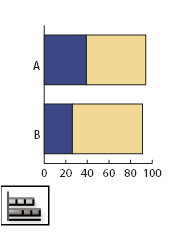
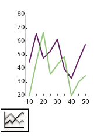
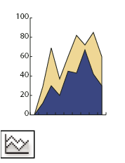
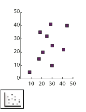
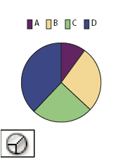
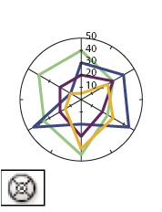

Graph tool gallery
Illustrator provides nine graph tools, each one for creating a different type of graph. The type of graph you choose depends on the information you want to communicate.
|
 The Column Graph tool (J) creates graphs that compare values
using vertical columns. |
 The Stacked Column graph tool creates graphs that are similar to
column graphs, but stacks the columns on top of one another, instead
of side by side. This graph type is useful for showing the relationship
of parts to the total. |
 The Bar Graph tool creates graphs that are similar to column graphs,
but positions the bars horizontally instead of vertically. |
 The Stacked Bar Graph tool creates graphs that are similar
to stacked column graphs, but stacks the bars horizontally instead
of vertically. |
|
 The Line Graph tool creates graphs that use points to represent
one or more sets of values, with a different line joining the points
in each set. This type of graph is often used to show the trend
of one or more subjects over a period of time. |
 The Area Graph tool creates graphs that are similar to line
graphs, but emphasizes totals as well as changes in values. |
 The Scatter Graph tool creates graphs that plot data points
as paired sets of coordinates along the x and y axes. Scatter graphs
are useful for identifying patterns or trends in data. They also
can indicate whether variables affect one another. |
 The Pie Graph tool creates circular graphs whose wedges represent
the relative percentages of the values compared. |
|
 The Radar Graph tool creates graphs that compare sets of values at
given points in time or in particular categories, and is displayed
in a circular format. This type of graph is also called a web graph. |